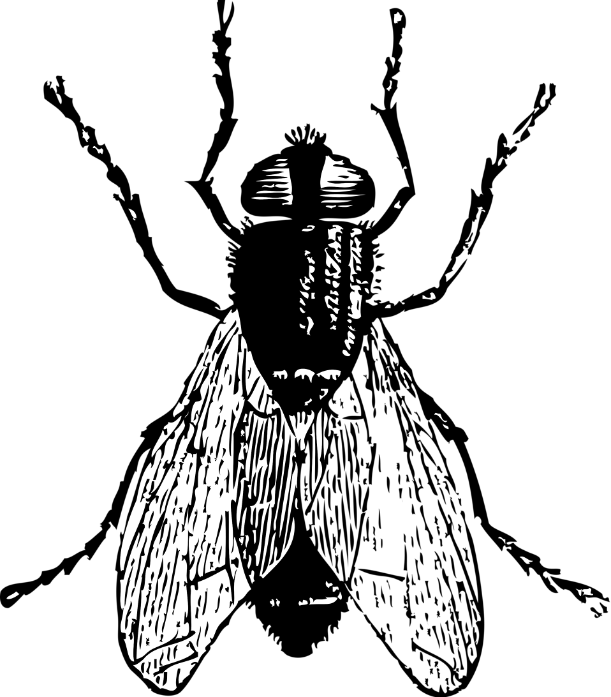

Stephen Fay
Use WASD to control the little man
About
Funmaxing life, 我现在这里中国拍照. Saving up for a Fujifilm X-E5--donate by clicking here to support my lifestyle
Self
Research,
Book Reviews,
Instagram,
GitHub,
Twitter,
Substack newsletter,
Tutoring business card,
curius profile,
LinkedIn,
Other: Project Euler profile and solutions,
Manifold bot,
Linktree
Communities
School2.0,
Recurse Center,
McGill NeurotechX,
Interact (2025)
Misc websites I like
Human Food,
Gritter Tracker,
Uptodate,
Wikipedia:
Wojtek,
Momofuku Ando,
Timothy Dexter,
Ludwig,
Eels,
Blogs:
DKB,
Construction Physics,
Zizek,
Software:
Tunnelblick,
Vim,
qbittorrent,
gqrx,
wireshark,
vscode,
boostnote (legacy),
oh my zsh,
grammarly,
foobar2000,
ffmpeg,
gimp,
imagemagick,
omnidisksweeper,
Gallery
Message me on twitter or send me an email: dcxstephen at gmail dot com